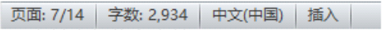
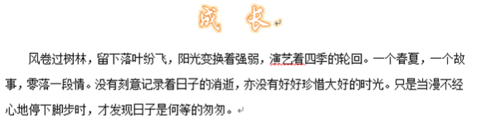
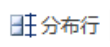

Word选择练习
返回主页当前：第1题 / 共25题
1. 关于Word中的文本框，下列说法正确的是( )。
答题解析
2. 在Word中，要输入“X²”可执行“开始”选项卡→“字体”组中( )命令实现。
答题解析
3. 在Word2010中，要给文档添加水印效果，可以实现的操作是( )。
答题解析
4. 下列关于艺术字的说法中，错误的是( )。
答题解析
5. 下列关于Word文档中“分栏”的说法，正确的是( )。
答题解析
6. 在Word2010中，要书写二氧化碳的分子式“CO₂”，可以通过( )按钮来实现。
答题解析
7. 唐昕同学想将“调查报告.doc”移动到对应文件夹时出现错误提示，出现这个提示的原因可能是( )。
答题解析
8. 在Word中选定表格一列，再按“Backspace”键，实现的效果是( )。
答题解析
9. 在Word2010中编辑表格时，要给无表头格式表格的表头添加绿色底纹，可以使用( )命令来实现。
答题解析
10. 在Word2010中，执行“形状填充”命令，可以将下方的形状变成( )。
答题解析
11. 在Word中，要输入水的化学分子式“H₂O”，可以将“2”选中，执行( )命令。
答题解析
12. 下列关于Word文档中图片宽高的说法，正确的是( )。
答题解析
13. 在使用Word编辑文档时，不小心按了Insert键，输入的文字将会( )。
答题解析
14. 关于Word文本框，下列说法错误的是( )。
答题解析
15. 在Word中编写文档时想插入“∑”符号，可使用( )选项卡“符号”组中的“符号”命令。
答题解析
16. 在Word2010中编辑表格时，使用“ ”命令可以( )。
”命令可以( )。
”命令可以( )。答题解析
17. 下图为Word2010窗口状态示意图，从图中可以看出( )。

答题解析
18. 在Word2010中，从左边字体效果到右边字体效果，是对( )进行了设置。
答题解析
19. 在Word2010中，插入艺术字的正确操作是( )。
答题解析
20. 如图所示，在Word2010中，该文档的标题设置了( )。

答题解析
21. 以下场景中，适合使用Word“替换”功能完成的是( )。
答题解析
22. 在Word2010中，要删除表格中选中的部分，可以执行表格工具中的( )命令。
答题解析
23. 在Word2010中编辑表格时，使用“”命令可以( )。
答题解析
24. 在Word2010中，可以改变艺术字大小的命令按钮是( )。
答题解析
25. 在Word2010中，对比左右两个文本框的效果，下列选项中未进行修改的是（ ）
答题解析
26. 如图所示，在Word2010中从上图到下图，可以使用工具栏中的( )来实现。
答题解析
闯关完成！答题统计
总答题数：0题
答对题数：0题
正确率：0%